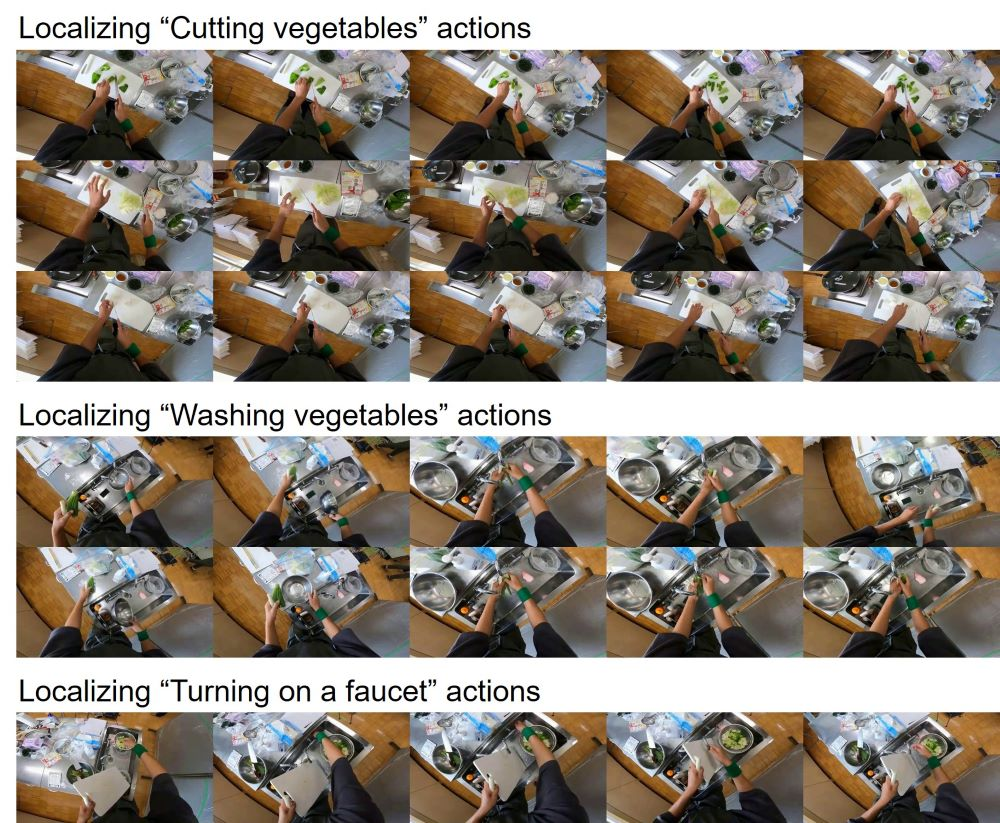

Video action localization aims to find timings of a specific action from a long video. Although existing learning-based approaches have been successful, those require annotating videos that come with a considerable labor cost. This paper proposes a learning-free, open-vocabulary approach based on emerging off-the-shelf vision-language models (VLM). The challenge stems from the fact that VLMs are neither designed to process long videos nor tailored for finding actions. We overcome these problems by extending an iterative visual prompting technique. Specifically, we sample video frames into a concatenated image with frame index labels, making a VLM guess a frame that is considered to be closest to the start/end of the action. Iterating this process by narrowing a sampling time window results in finding a specific frame of start and end of an action. We demonstrate that this sampling technique yields reasonable results, illustrating a practical extension of VLMs for understanding videos.
Pipeline
The proposed pipeline for open-vocabulary video action localization using a VLM consists of the following steps: (a) Frames are sampled at regular intervals from a time window, covering the entire video in the first iteration. (b) The sampled frames are then tiled in an image with annotations indicating the time order of the frames. (c) This image is then fed into a VLM to identify the frames closest to a specific timing of an action (e.g., the start timing of an action). (d) The sampling window is updated by centering on the selected frame with a narrower sampling interval. Bottom panel (1) For general action localization, the start time of the action in the video is determined by iterating steps (a) to (d). Bottom panel (2) By estimating the end time of the action in the same manner, the action is localized in the video.
Qualitative Results
We qualitatively checked our proposed pipeline using a cooking-preparation video that we recorded in-house. This 10-minute first-person video included actions such as taking out, washing, and cutting vegetables. The figure below shows the examples of the identified video segments for actions of "cutting vegetables,""washing vegetables," and "turning on a faucet," demonstrating that reasonable outputs were obtained.

Quantitative Results
The table below compares our proposed method with an existing method [1] on the Breakfast Dataset [2]. While our proposed method does not surpass the latest model-based approaches, this approach demonstrates its feasibility. Importantly, this method offers significant advantages: it eliminates the need for data collection or training and can extract actions specified by open-vocabulary free-text queries, thereby enhancing its adaptability to diverse applications such as video annotation and video editing.
[1] Hilde Kuehne, Ali Arslan, and Thomas Serre. "The language of actions: Recovering the syntax and semantics of goal-directed human activities." In Proceedings of the IEEE conference on computer vision and pattern recognition, pages 780–787, 2014.
[2] Elena Bueno-Benito, Biel Tura Vecino, and Mariella Dimiccoli. "Leveraging triplet loss for unsupervised action segmentation." In Proceedings of the IEEE/CVF Conference on Computer Vision and Pattern Recognition, pages 4922–4930, 2023.